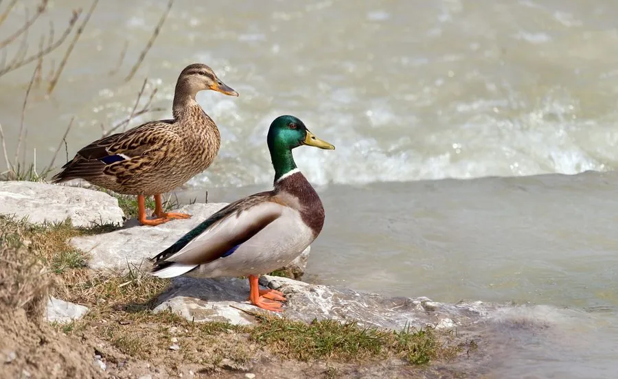

鸟类 · 动物界
绿头鸭 Anas platyrhynchos

最常见的大型野鸭，雄鸟头部翠绿、颈环白色，尾羽上翘，是家鸭的主要祖先，也广泛分布于北半球水域。
- 分类
- 门脊索动物门纲鸟纲目雁形目科鸭科属鸭属
- 栖息环境
- 湖泊、河流、沼泽、池塘、水田与城市公园，喜在浅水中觅食
- 地理分布
- 北半球广泛分布，中国各地均有，北方种群冬季南迁
- 保护级别
- IUCN 无危（LC）；中国“三有”保护动物
物种志
绿头鸭体长 50–65 cm，体重 0.7–1.5 kg，翼展 81–98 cm。雄鸟在繁殖期头部呈翠绿色，颈部有一圈白色颈环，胸部栗红色，背部灰褐色，尾羽上翘并带黑色卷羽，翅膀上有蓝紫色的翼镜。雌鸟通体棕褐色并密布斑纹，羽色低调，便于在草丛中隐藏。
绿头鸭广泛分布于北半球的湖泊、河流、沼泽、池塘和城市公园，中国各地都有分布，北方种群冬季南迁。它们是杂食性鸟类，吃水生植物、谷物、昆虫、螺类和小鱼，常把头伸入水中觅食。绿头鸭是家鸭的主要祖先，人类驯化历史已有数千年。繁殖期在水边草丛中筑巢，每窝产卵 8–13 枚，孵化约 27–28 天。由于适应力强、数量庞大，绿头鸭被列为无危物种，在中国属于“三有”保护动物。
形态与习性
- 食性水生植物、谷物、昆虫、螺类和小鱼
- 体长50–65 cm
- 体重0.7–1.5 kg
- 翼展81–98 cm
- 繁殖每窝 8–13 枚卵，孵化约 27–28 天
- 寿命野外约 10 年
- 驯化家鸭的主要祖先，驯养历史数千年
趣味知识
- 绿头鸭是家鸭的主要祖先，人类驯养历史已有数千年。
- 雄鸟头部的翠绿色在阳光下会泛出金属光泽。
- 它们觅食时会把头和前半身伸入水中，屁股朝天。
- 绿头鸭翅膀上的蓝紫色翼镜在飞行时十分醒目。